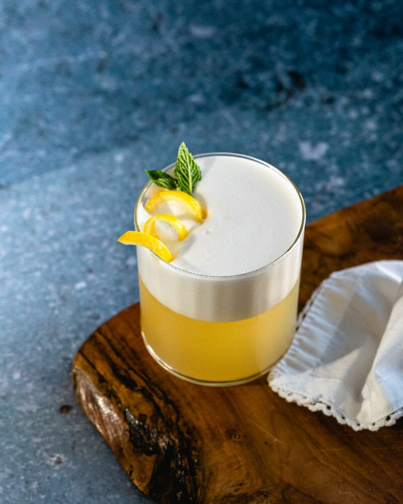

Gin Fizz Recipe

Ever had a Gin Fizz? It’s one of the best uses of a bottle of gin around (really). This classic cocktail from the 1870’s is perfectly balanced, both sweet and tart with a pop of lemon and a botanical finish. Add to that a frothy egg white foam topping, which adds the best creamy texture to each sip. Oh and it takes only 5 minutes to make! Ready to experience this iconic gin cocktail?
Ingredients
- Gin - 2 ounces
- Lemon - 3/4 ounce
- Simple Syrup or Maple Syrup 1/2 ounce
- Egg White
- Soda Water
- Garnish of Lemon (optional)
- Ice
- Place the gin, lemon juice, syrup and egg white in a cocktail shaker. Shake vigorously for 15 seconds
- Fill the shaker with ice and shake for 30 seconds until cold
- Strain the drink into a glass and top with the soda water; the egg white foam forms on top. If desired, garnish with a lemon twist. Serve immediately
*For vegan, substitute 2 tablespoons aquafaba, the liquid from a can of chickpeas